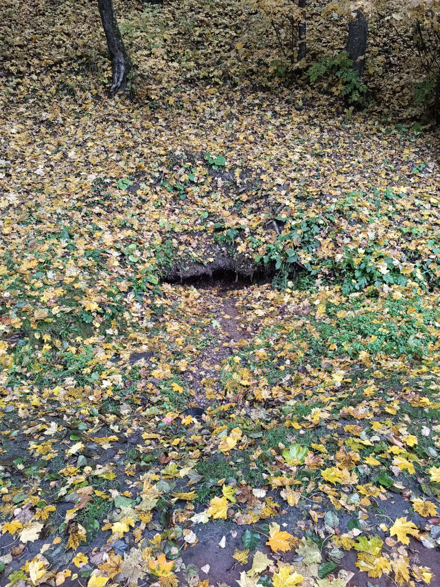
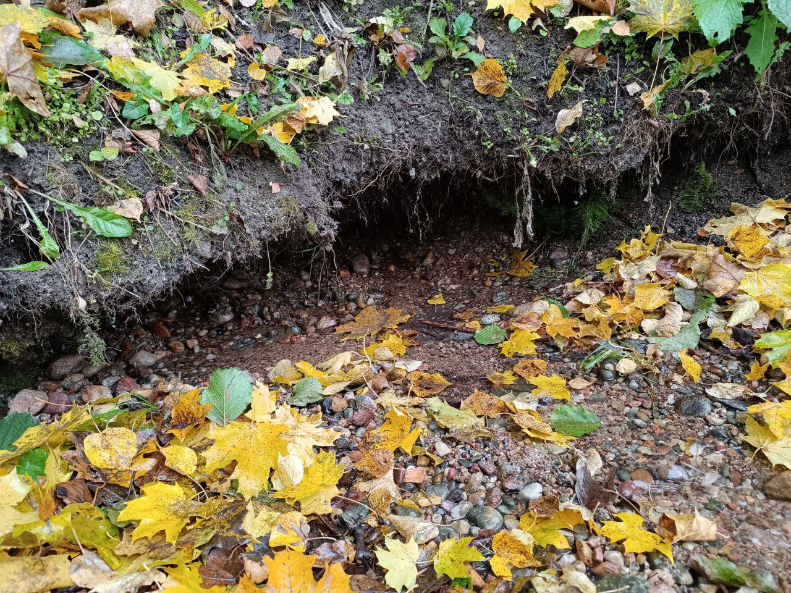

Логойск-3
12.10.2025
Минская область > Логойский район > г. Логойск > Логойск-3


Родник относится к типу лимнокрен. Родниковый ручей питает пруд на р. Гайна.
Местоположение
Координаты: 54.20389, 27.84802
12.10.2025
Минская область > Логойский район > г. Логойск > Логойск-3


Родник относится к типу лимнокрен. Родниковый ручей питает пруд на р. Гайна.
Координаты: 54.20389, 27.84802